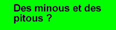

La
page de l'homme de ma vie, Daniel, une mine d'or pour les esprits scientifiques...
surtout pour ceux qui ne vivent que pour le Java
(on y trouve d'ailleurs le code des applets qu'il a conçues et qui sont
utilisées dans mon site et dans celui de ma soeur).
Le site de ma
soeur Annie : l'artiste de la famille. Elle se présente et expose quelques-uns
de ses dessins réalisés par ordinateur. Vous comprendrez que ça lui a pris
beaucoup de temps pour les mener à terme...
La page
de Lava, mon amie Martine, une Berthelaise (n'oubliez pas de signer
le livre de cette grande amatrice de dauphins, de Star Trek et de chat).
The Runner,
l'un des meilleurs sites graphiques que je connaisse. Conçu par un futur
informaticien qui promet... Allez suivre les aventures de Superbole! (En
passant, c'est lui qui a eu la gentillesse de concevoir ma bannière ainsi
que le petit Milou qui lit sur ma page d'accueil.)
Bannières
Merci au Runner pour les belles bannières ci-dessous! Visitez son site, vous en verrez d'autres... dont une bannière de mon cher Daniel avec un électron qui lui tourne autour de la tête (il ne m'aimera pas d'avoir écrit ça...).
Pourquoi le petit Milou? Parce que c'était la mascotte de l'ancienne version de mon site...

La photo de cette bannière date de novembre 1997 (photo de finissante).
Me voici le 1er janvier 1999... prête à affronter la dernière année du millénaire.